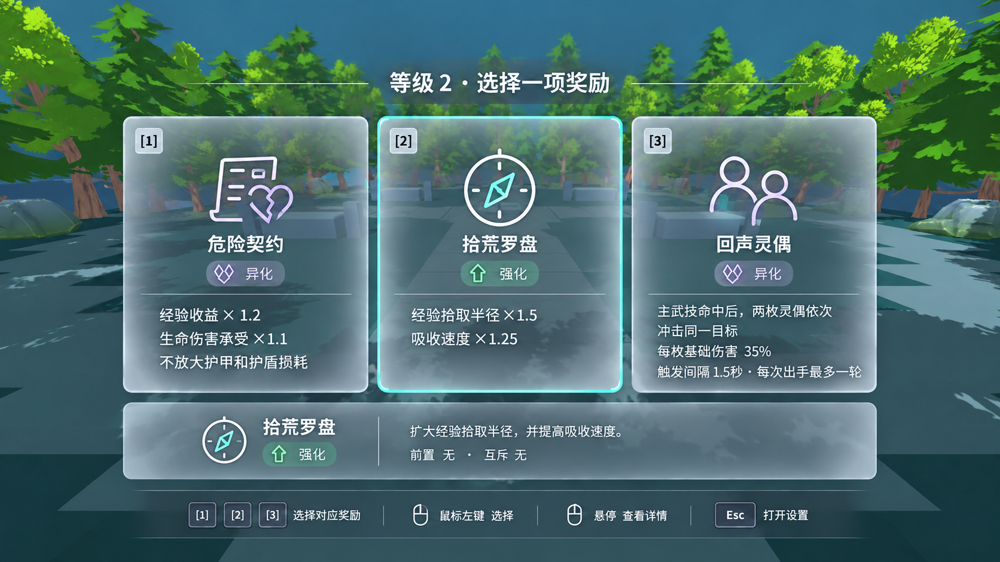
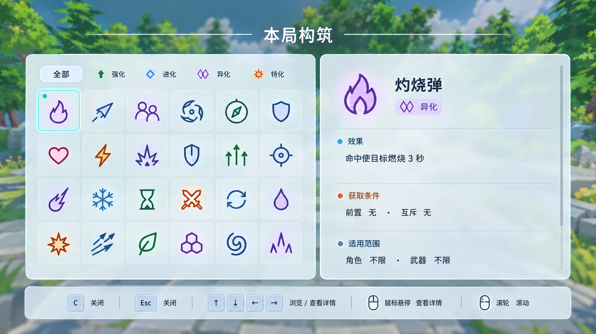
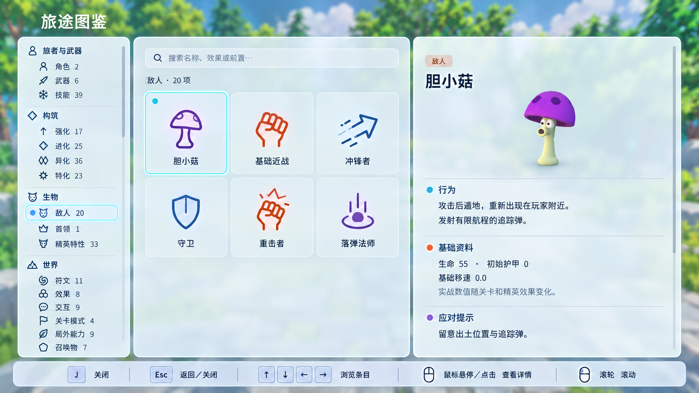
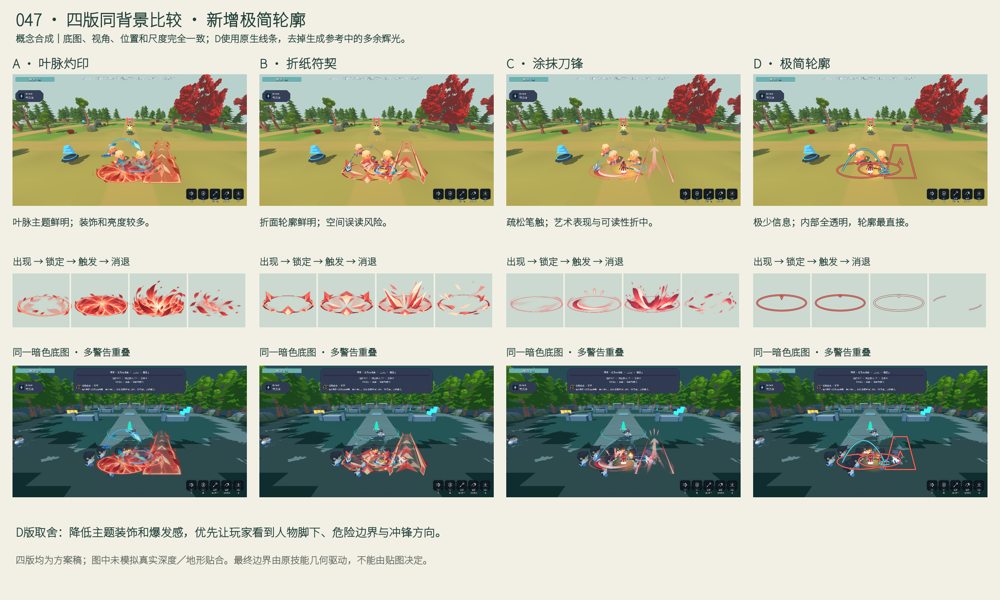
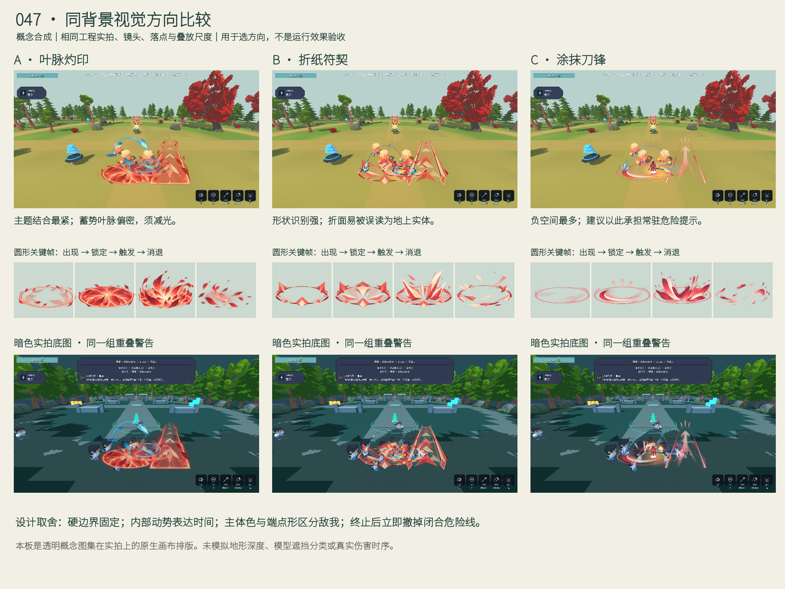
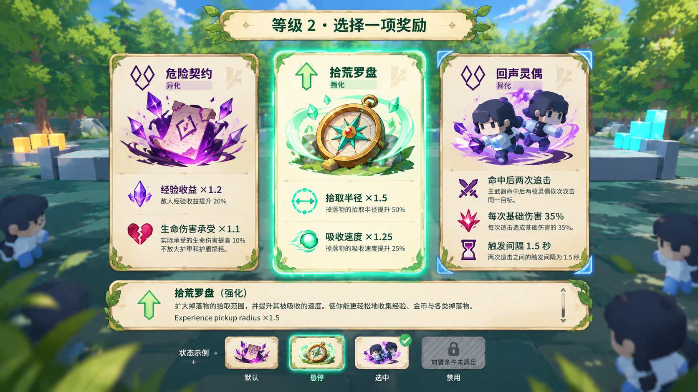
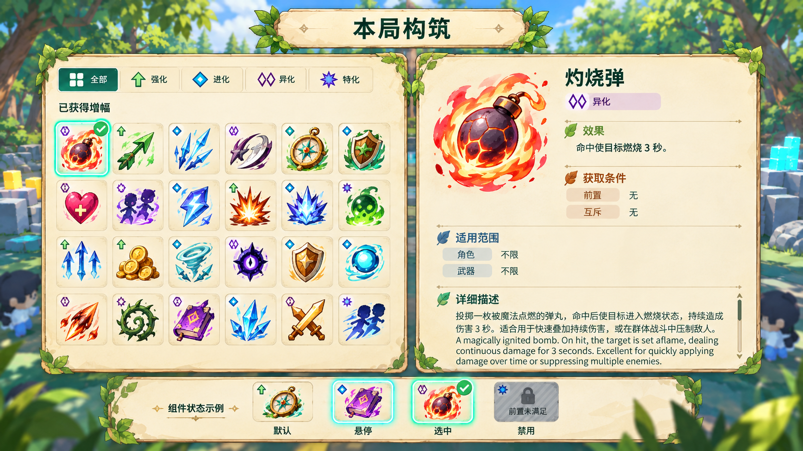
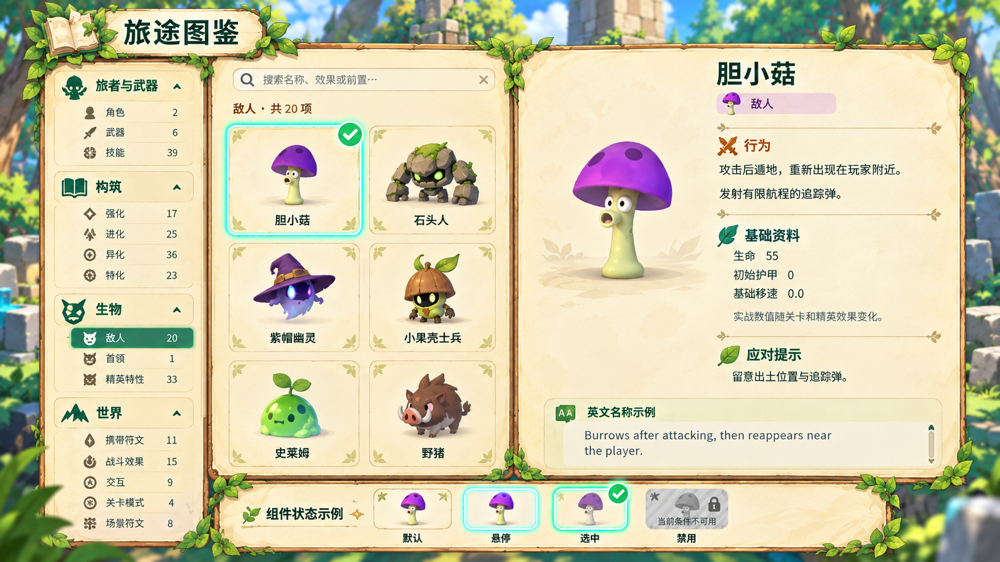

危险信息先清楚，艺术语言再生长。
当前推进：C指示器，正常场景深度；简化毛玻璃UI与图标，页面按键栏。三选一卡牌中央烟灰半透明，边缘磨砂。以下均为概念稿，未替换生产资源。
查看完整报告、问题优先级与验收标准当前卡牌材质 · 中央透、边缘雾
按最新反馈重做：中部偏灰而通透，让庭院形体透出来；接近边缘才逐渐雾化。保留薄边，不做厚玻璃相框。底部列出数字选择、鼠标操作与Esc设置，没有状态示例。

当前稿v3。关键文字使用稳定灰衬与浅字；实际明暗地表对比仍需材质原型测试。Enter／Space的焦点与默认第1项旁路需在落地时统一，不能误标为确认悬停项。
构筑与图鉴 · 简化磨砂阅读面
长文页面保留更稳定的均匀磨砂底，统一薄边、图标和字级；分别显示本页有效按键。搜索框焦点下图鉴的J按文字输入处理，键栏需动态更新。


指示器 · C方向继续收敛
已记录用户倾向C。撤销强制顶层渲染，采用正常场景深度；贴地、墙体和高差遮挡按空间关系处理，不默认穿墙。原板未模拟深度，仅保留为艺术方向参考。
查看C四类技能／四阶段历史指示器方向比较（不代表当前层级要求）
新增D · 极其简化，只保留轮廓
内部全透明，不加纹样、粒子、烟尘或辉光；敌方连续边，玩家开放端点，冲锋只留一个箭头。机制、范围与伤害时刻不变。以“先看清脚下”为标准，D更直接；C保留更多艺术表现。


047 · 前三版互动比较
保留C版的疏松笔触与固定硬边、A版叶脉和B版折面供对照。切换阶段观察“读范围、读时间、读方向”的差别；新增D以已核对的上方静态板展示。
阶段切换仅展示四张概念关键帧，循环速度为评审节奏。生成图集不保证精确范围；未模拟真实深度／地形贴合，不能据此验收跨墙、坡地或伤害时刻。消退残圈、触发高度、粗玩家弧线均在报告中列为收敛项。


查看固定比较板

历史纸面UI与过程稿（已由毛玻璃方案取代）
旧版纸面方向
能力主图回答“是哪项”，类别小标回答“哪一类”。标题、留白与图形同时区分效果／条件／适用范围。机制描述保留必要文字，悬停详情移出候选卡区。

回声灵偶正式说明：主武技命中后两枚灵偶依次冲击同一目标，每枚造成基础伤害35%；触发间隔1.5秒，每次出手最多一轮。拾荒罗盘仅描述经验拾取范围及吸收速度，不扩写金币。

灼烧弹正式说明：“命中使目标燃烧3秒”。插画不定义投弹机制，额外扩写不进入生产。
